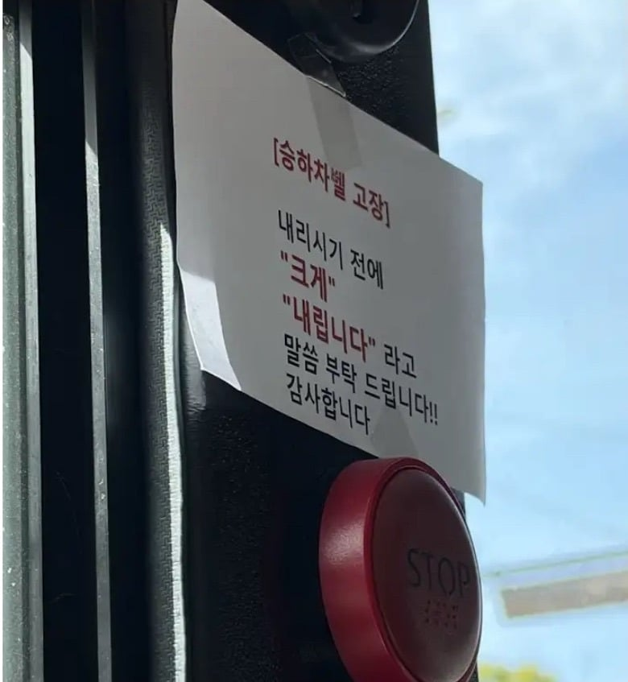

내...내맄깨여...!

내...내맄깨여...!
"내, 내릴게요!"
(문이 열린다)
'어, 정류장 착각했어... 아직 두 정류장 더 남았네...?'
(아무도 안 내린다)
"거기 학생 내린다면서요?! 안 내려요?"
(모두가 날 지켜보는 듯하다)
순간 눈 앞이 깜깜해지고 숨이 가빠오고
온몸에 땀이 쫙 났지만
태연하게 내려서 두 정거장을 걸어서 되돌아왔다
하차컷 너무 높다
기사빼고 다 듣고 정류장 지나가거나 승객중에 한명이 저 개붕이 내린다는데? 해도 그냥 지나감 ㅋㅋㅋㅋ
이런 기회에 종점도 가보고 그러는거지
검사할 때마다 내향 90% 이상 나오는데 쌉가능이다
이걸 못하는건 내향인이 아니고 내성인임 다들 헷갈리지 말도록!
오해가 많은데 핑계와 명분이 있으면 내향인은 전혀 쑥스럽지 않다
가짜 내향인이네
교통카드 찍고 탔는데 내릴 때는 구술면접이네 ㅋㅋ
종점 가서 벨 있는거 타야지 뭐
크게 내립니다!!!